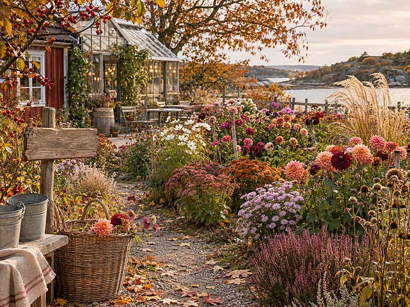
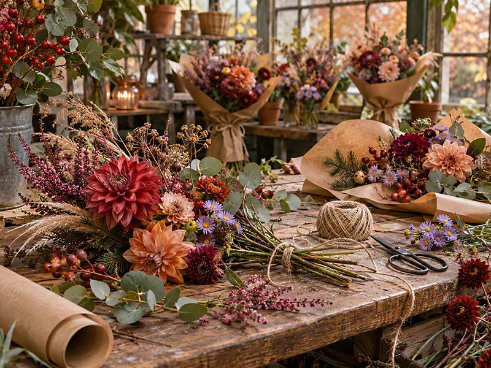

Fika
Det finns många goda alternativ att välja på
- Saffransbulle 35 kr
- Kanel-croissant 45 kr
- Sivs kanelbulle 40 kr
- Tarte au citron meringuée 55 kr
- Tarte a la Siv 55 kr
- Croissant 45 kr
Mat
Vi erbjuder hemlagad mat med kärlek, passion och spännande smaker
- Sivs saffransdoftande fisksoppa med dagens bröd och egengjord aioli 125 kr
- Sivs mustiga tomatsoppa med dagens bröd 110 kr
- Grillad ostmacka med sallad 85 kr
- Dagens lunch 90 kr
Dryck
Här hittar du både varma och kalla drycker
- Kaffe 30 kr
- Varm äppelcider 35 kr
- Te (flera sorter) 25 kr
- Varm choklad 35 kr
- Varm choklad med grädde 40 kr
- Glögg på Sivs vis 40 kr
- Läsk 25 kr
Blommor
Hos oss finns många blommor i olika storlekar och färger
- Plocka själv - pris beroende på storlek och val
- Färdiga buketter i olika storlekar - se dagens utbud inne i cafét



